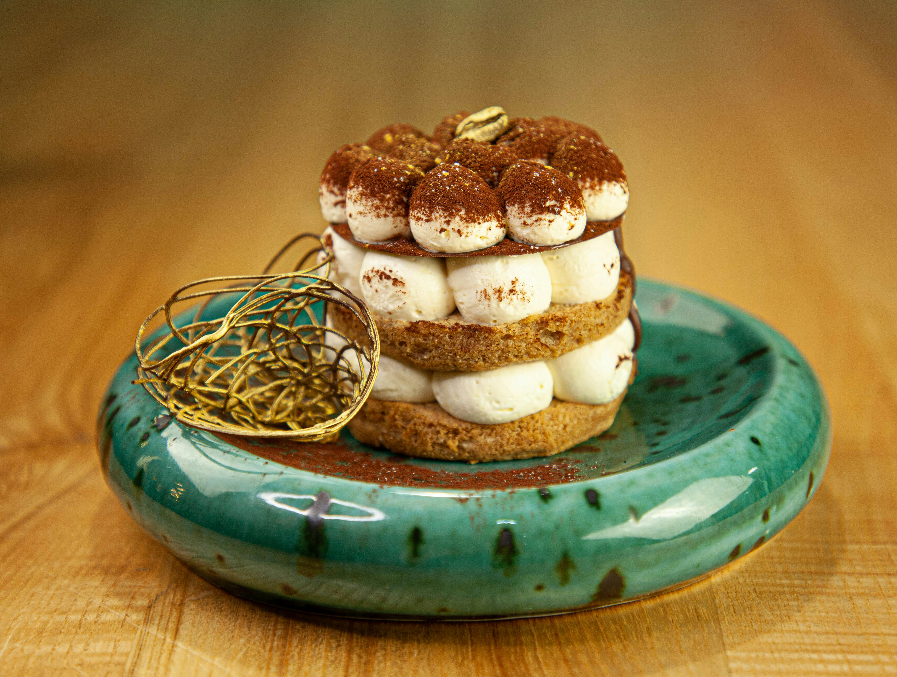

Tiramisu

It's brown, it's white, it's tiramiSIUUUUUUUU!
Tiramisu has Italian origins.
The famous Italian restaurateur Ado Campeol is credited with its invention
in the 1970s.
In fact, he was widely known as "the father of tiramisu."
The word "tiramisu" translates to "pick-me-up."
Ingredients:
- Egg yolks
- Sugar
- Milk
- Cream
- Vanilla
- Mascarpone
- Coffee
- Rum
- Ladyfingers
- Cocoa powder
How to make it
- Make the filling:
Cook the egg yolks, sugar, and milk until slightly thickened.
Let cool slightly, then chill in the fridge for about an hour.
When the filling has fully chilled, mix in mascarpone cheese.
- Make the whipped cream:
Beat heavy cream with vanilla extract until stiff peaks form.
- Soak the ladyfingers:
Combine coffee and rum in a small bowl.
Pour mixture over ladyfingers that have been split in half lengthwise.
- Assemble the tiramisu:
Line the bottom of a baking dish with soaked ladyfingers.
Spread half of the mascarpone mixture over the ladyfingers, then half of the whipped cream over that.
Repeat in the same order.
Dust with cocoa powder.